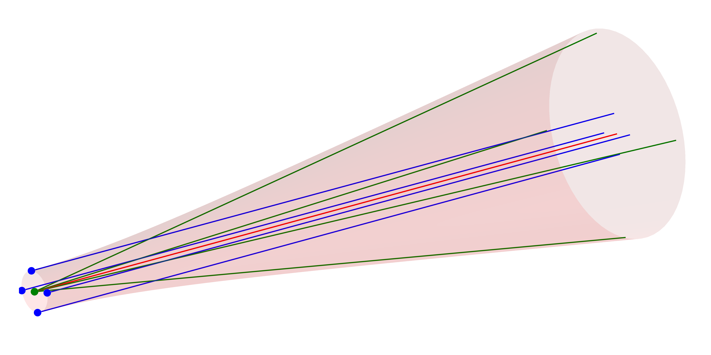
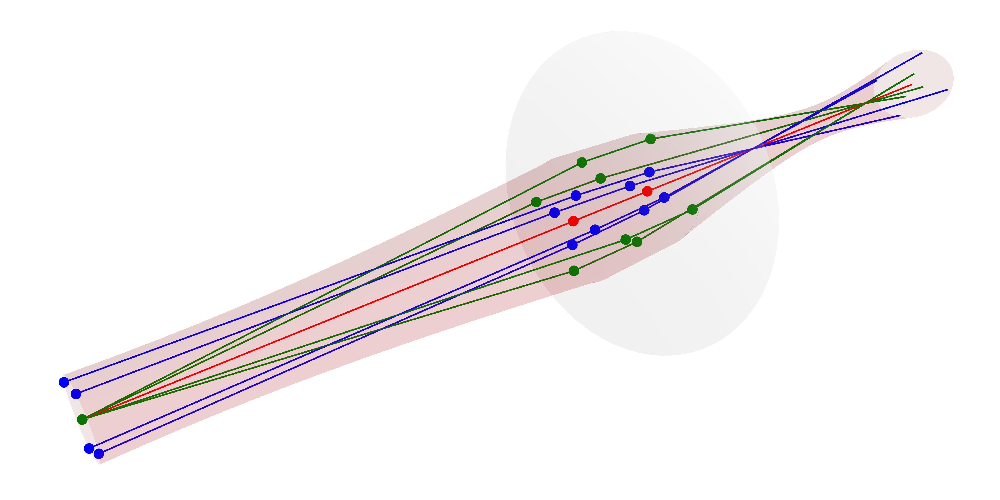
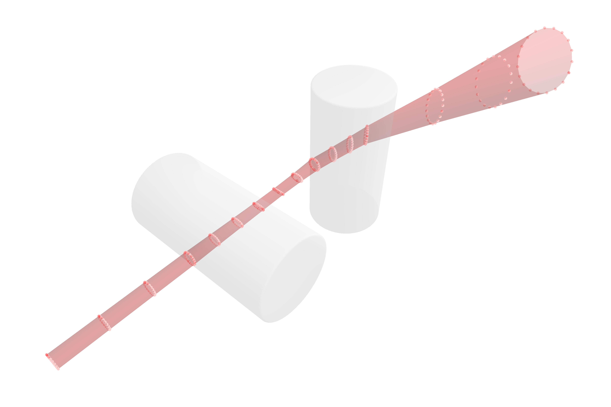

Astigmatic polarized beamlets
Standard stigmatic beamlets are limited to symmetric systems. For the modeling of arbitrary optical systems, including off-axis components, tilted lenses, or complex media like atmospheric turbulence, the package provides the AstigmaticGaussianBeamlet. This type implements the astigmatic Gaussian beamlet ray tracing formalism initially proposed by Greynolds (1986) [13, 14].
However, this idea has been referred to in multiple ways over the last few decades, including but not limited to: Gaussian Beamlet Tracing (GBT), Fat Ray Tracing (FRT), Parabasal Ray Tracing (PRT), Complex Ray Tracing (CRT), Gauss Beamlet Propagation (GBP) and Beam Synthesis Propagation (BSP).
Formalism
Similar to the Gauss model presented in the Stigmatic beamlets chapter, an astigmatic beamlet can represented by a cluster of 9 rays:
- Chief Ray: a
PolarizedRaydefining the central path and polarization state. - Waist Rays: four "positional" rays (waist $x+, x-, y+, y-$)
- Divergence Rays: four "directional" rays (divergence $x+, x-, y+, y-$)
These rays can be thought of tracking the complex curvature matrix $\mathbf{Q}(z)$ through the system. The key assumptions made in order for this formalism to hold are:
- Paraxiality: the auxiliary rays must remain within the paraxial regime relative to the chief ray.
- Parabolic interaction: since only astigmatism can be captured, each surface interaction must be approximately parabolical
- Homogeneous polarization: the polarization state of the traced field is assumed to be homogeneous over each beamlet
- Matched scale: the beamlet must be smaller than the optical element it interacts with, see also 2.
The initial ordering of the geometric beams/rays is shown in the figure below. The colors represent the chief (red), waist (blue) and divergence (green) beams.

As with the GaussianBeamlet, tracing these rays through a system allows the reconstruction of the waist envelope and electric field. The reduced complex amplitude of the Gaussian beamlet is computed as
\[\psi(\mathbf{r}) = \frac{E_0}{\sqrt{\mathbf{h}_1 \times \mathbf{h}_2}} \cdot \exp \left( i k \frac{(\mathbf{h}_1 \times \mathbf{r})(\mathbf{u}_2 \cdot \mathbf{r}) - (\mathbf{h}_2 \times \mathbf{r})(\mathbf{u}_1 \cdot \mathbf{r})}{2 \mathbf{h}_1 \times \mathbf{h}_2} \right) \,,\]
where $\mathbf{h}_{1,2}$ and $\mathbf{u}_{1,2}$ are the two-dimensional complex ray height and angle vectors on the plane perpendicular to the chief ray [13, 15, 16]. By also tracing a 3D-field vector along the chief ray based on the formalism introduced in the Polarized rays section, polarization effects can be considered when calculating $\psi$ [17]. For a simple lens setup, the resulting waist is illustrated in the image below.

While the above beam closely matches the example Gaussian given in the previous section (Obtaining the beam parameters), the real advantage of this extended method lies in the tracing of non-symmetric systems. For a tilted two cylinder lens system, the following result with strong astigmatic effects is obtained. Multiple waist slices are marked with red dots.

The phase factor due to the optical path length of the central ray ($e^{i k (z + \Delta L)}$) is added to the reduced field $\psi$ during the final field calculation for each beamlet. More information on the mathemathics behind this formalism can be found below in The Curvature Matrix $\mathbf{Q}$ section.
In order to ensure the correctness of the traced beamlet, the complex ray vectors must satisfy the vanishing complex optical invariant:
\[\mathbf{h}_1 \times \mathbf{u}_2 - \mathbf{h}_2 \times \mathbf{u}_1 = 0\]
This ensures that the complex curvature matrix $\mathbf{Q}$ is symmetric, since the beamlet formalism can not capture higher-order abberations.
Astigmatic beamlets
You can construct a single astigmatic beamlet with a specified waist and polarization:
BeamletOptics.AstigmaticGaussianBeamlet — Method
AstigmaticGaussianBeamlet(position, direction, λ, w0; kwargs...)Constructs an astigmatic Gaussian beamlet at its waist with the specified beam parameters. In the 4-argument version, the beam has circular symmetry with waist radius w0. In the 5-argument version, independent waists w0_x and w0_y can be specified.
Arguments
Inputs
position: origin of the beamletdirection: direction of the beamletλ: wavelength of the beamlet in [m]. Default value is 1000 nm.w0: beam waist (radius) in [m]. Default value is 1 mm.w0_x,w0_y: independent beam waists in [m].
Keyword Arguments
M2,M2_x,M2_y: beam quality factors. Default is 1P0: beam total power in [W]. Default is 1 mW.E0: electric field vector in [V/m]. Default isnothing(aligned with support axes, scaled byP0).support: optional support vector for basis constructionz0: beam waist offset in [m]. Default is 0 m
Additional information
The constructor will spawn an AstigmaticGaussianBeamlet which is implemented as follows:
BeamletOptics.AstigmaticGaussianBeamlet — Type
AstigmaticGaussianBeamlet{T} <: AbstractBeam{T, PolarizedRay{T}}Complex ray representation of a general astigmatic Gaussian beam as per the formalism described by A. Greynolds (1986) and N. Worku (2017). The beam is described by a chief PolarizedRay and 8 auxiliary Rays that encode the waist radius and divergence in two orthogonal transverse axes. The beam quality M2 is considered via the divergence angle. All equations are based on the following publications:
Alan Greynolds, "Vector formulation of the ray-equivalent method for general Gaussian beam propagation." Curr. Dev. Opt. Eng. Diffraction Phenom. Vol. 679. SPIE, 1986
and
Norman Worku and Herbert Gross, "Vectorial field propagation through high NA objectives using polarized Gaussian beam decomposition." OTOM XIV. Vol. 10347. SPIE, 2017
Fields
c: chiefBeamofPolarizedRayswxp: waist x-positiveBeamofRayswxm: waist x-negativeBeamofRayswyp: waist y-positiveBeamofRayswym: waist y-negativeBeamofRaysdxp: divergence x-positiveBeamofRaysdxm: divergence x-negativeBeamofRaysdyp: divergence y-positiveBeamofRaysdym: divergence y-negativeBeamofRaysparent: reference to the parent beam (ornothing)children: vector of child beams (e.g. after beam-splitting)
Additional information
For a given beamlet the Gaussian beam parameters can be obtained via the gauss_parameters function.
Calculating astigmatic beam parameters
To obtain the physical vector electric field [V/m] at any point:
# Field at world position (x, y, z)
E_vec = polarized_field(agb, [0.01, 0, 0], 10.0)# Decompose a field from a detector into a new AstigmaticBeamGroup
beams = WavefrontBeamletDecomposition(x, z, amplitude, phase, dir, λ)
# Solve system (propagate all beamlets to next segment)
solve_system!(system, beams)The Curvature Matrix $\mathbf{Q}$
The relationship between the auxiliary rays and the complex curvature of the beam is defined by the matrix equation $\mathbf{Q} = \mathbf{U}\mathbf{H}^{-1}$. By arranging the transverse components of the complex rays into $2 \times 2$ matrices $\mathbf{H} = [\mathbf{h}_1, \mathbf{h}_2]$ and $\mathbf{U} = [\mathbf{u}_1, \mathbf{u}_2]$, we can solve for the individual components of $\mathbf{Q}$:
\[\mathbf{Q} = \frac{1}{\mathbf{h}_1 \times \mathbf{h}_2} \begin{bmatrix} u_{1x} h_{2y} - u_{2x} h_{1y} & u_{2x} h_{1x} - u_{1x} h_{2x} \\ u_{1y} h_{2y} - u_{2y} h_{1y} & u_{2y} h_{1x} - u_{1y} h_{2x} \end{bmatrix}\]
The diagonal elements $Q_{xx}$ and $Q_{yy}$ describe the phase curvature (and beam width) along the primary axes, while the off-diagonal elements $Q_{xy}$ (which must equal $Q_{yx}$ for a paraxial beam) describe the general astigmatism or twist of the wavefront. This representation allows the formalism to track complex, rotating beam profiles as they propagate through non-orthogonal optical systems. It is important to note that this matrix is not directly tracked during beamlet propagation in BMO. More information can be found in the works of Kochkina (2013) and Ashcraft et al. (2024) [18, 19].
All vector operations in the formulas above ($\cdot, \times$) and the matrix product $\mathbf{r}^T \mathbf{Q} \mathbf{r}$ use the analytic bilinear form rather than the conjugated dot product. This preservation of analytic continuity is essential for the stability of Gaussian beamlets in the complex domain.
Physical Beam Cross-Section
While the complex curvature matrix $\mathbf{Q}$ determines the phase and amplitude of the field, extracting the physical $1/e^2$ irradiance footprint (the principal axes of the beam ellipse) requires calculating the spot covariance matrix. This relates directly to the internal code of the waist_parameters function.
As explicitly modeled for general astigmatic Gaussian beams [20], the matrix describing this intensity ellipse is directly derived from $\operatorname{Im}(\mathbf{Q})$. The eigendecomposition of this matrix (or its inverse) yields eigenvalues that correspond exactly to the squared physical semi-axes of the beam.
The spatial spot matrix $\mathbf{S}$, which describes the boundary of this intensity ellipse, is proportional to $\operatorname{Im}(\mathbf{Q})^{-1}$. A fundamental property of Hamiltonian optics (the symplectic invariant) dictates that for any physically valid, non-twisted Gaussian beam, the imaginary part of the curvature matrix satisfies:
\[\operatorname{Im}(\mathbf{Q}) = (\mathbf{H} \mathbf{H}^\dagger)^{-1}\]
This identity implies that the spatial spot covariance matrix $\mathbf{S}$, which defines the beam envelope, is directly proportional to the outer product of the complex ray height matrix: $\mathbf{S} \propto \mathbf{H} \mathbf{H}^\dagger$.
In BeamletOptics, this calculation is mapped directly to the 3D global coordinate system. Using the two complex 3D ray vectors $\mathbf{h}_1$ and $\mathbf{h}_2$, the $3 \times 3$ physical covariance matrix is formed by taking the real part of the tensor product:
\[\mathbf{S} = \operatorname{Re}(\mathbf{h}_1 \mathbf{h}_1^\dagger + \mathbf{h}_2 \mathbf{h}_2^\dagger)\]
Expanding the complex vectors into their real and imaginary parts ($\mathbf{h} = \mathbf{h}_r + i \mathbf{h}_i$), this is implemented as:
\[\mathbf{S} = \mathbf{h}_{1r} \mathbf{h}_{1r}^T + \mathbf{h}_{1i} \mathbf{h}_{1i}^T + \mathbf{h}_{2r} \mathbf{h}_{2r}^T + \mathbf{h}_{2i} \mathbf{h}_{2i}^T\]
To find the true physical principal axes of the general astigmatic beam, the waist_parameters function computes the eigendecomposition of this symmetric matrix $\mathbf{S}$. The resulting eigenvectors provide the orientation, while the square roots of the eigenvalues provide the lengths of the orthogonal major and minor 3D semi-axes. This approach ensures an objective and stable definition of the intensity footprint, even in systems where the beam undergoes rapid rotation, skew, or non-orthogonal transformations [8, 17, 20].